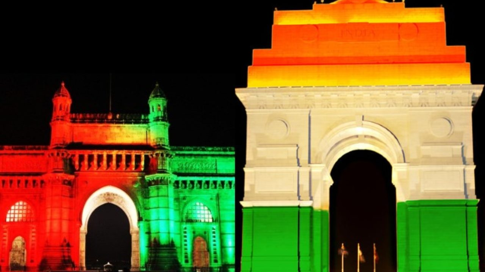

Qutab Minar
A valuable, protected structure of India is Qutub Minar, Delhi which has been considered to be a highly important historical attraction existing currently in India. It is a part of the Qutub Complex which was declared as a UNESCO World Heritage Site and it is also one of the famous places to visit in north Delhi. The structure is situated in the Mehrauli area of Delhi. Qutub Minar Metro Station located at a distance of about 3km will be the easiest access to reach the amazing architectural brilliance. You can also book Delhi tour package as here is no end to the glorious history being explored in the present.
Qutub Minar is made of red sandstone and marble making its height up to 73 meters and gives a tower like structure to it which is consisted of five stories and its diameter is 14.3 meters at the base and it becomes 2.7 meters at the top.
Another main feature of it is the spiral staircase of 379 steps. It has been saying that the design of the tower had its origin from the Minaret of Jam located in Western Afghanistan. Qutub Minar’s founder was the legendary Qutub al-Din Aibak who was behind the existence of the Delhi Sultanate. The construction of the structure was started in 1192 and it was completed by Aibak’s successor Iltumish in 1220. But after some decades, its top storey was destructed by a lightning and later Firoz Shah Tughlaq renovated the damaged storey and constructed one more.
Around the tower, there are several historical monuments like the Qutub Complex with Quwwat ul IslaMosqueue and the Iron Pillar of Delhi. The structure of the tower has a style that resembles the architectural style prevailed in Iran but some artistic conventions found locally were incorporated such as looped bells, garlands and lotuses that are borders were carved out. One can see different inscriptions in Parso-Arabic and Nagari at different sections of the structure.
Qutub Minar entry timings:The visit to the structure is restricted to the day time between sunrise and sunset on all days.
Qutub Minar entry fee:For Indian citizens: Rs. 30 and for foreign nationals: Rs.500.
For children up to 15 years, the entry is free.
Qutub Minar Delhi is situated in Mehrauli in South West district of New Delhi, India.
Insider Tips:Delhi Monuments
1. India Gate
2. Rashtrapati Bhavan

3. Red Fort